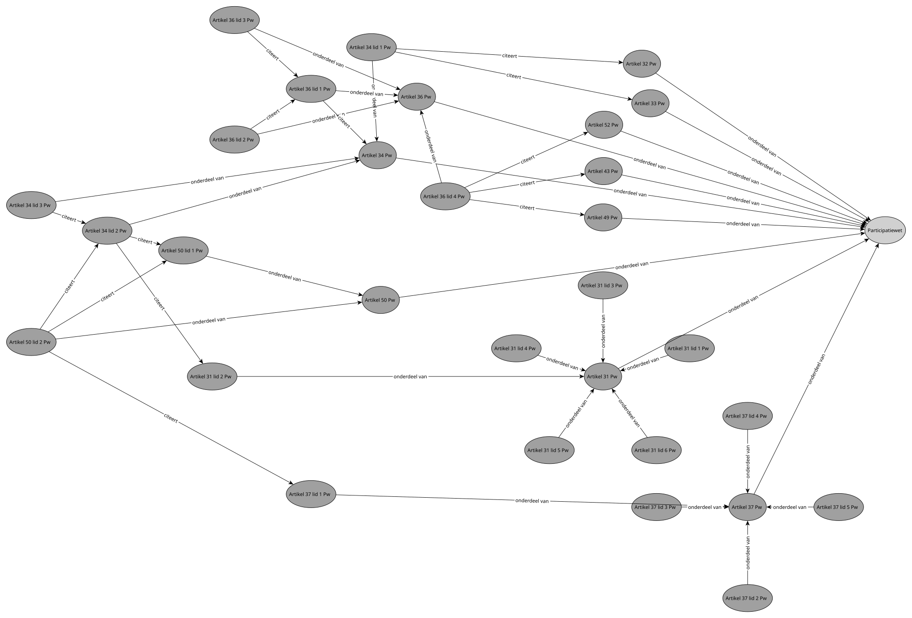
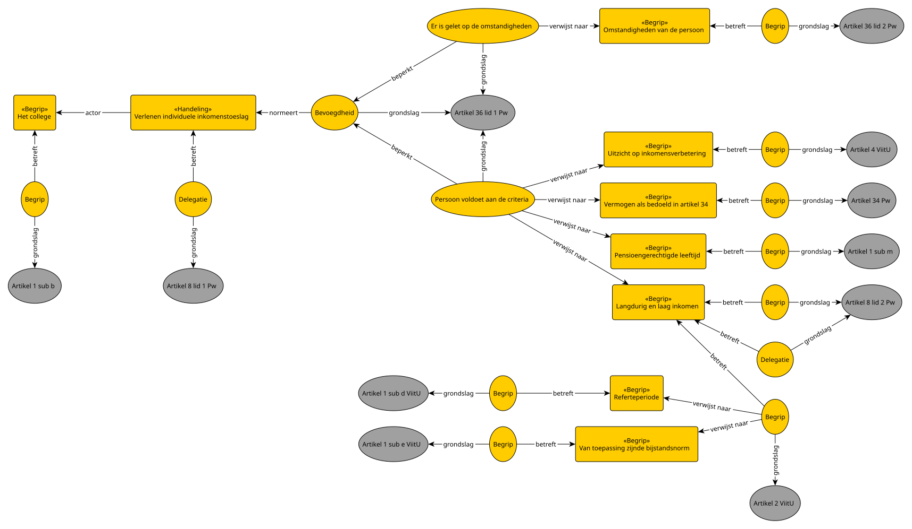
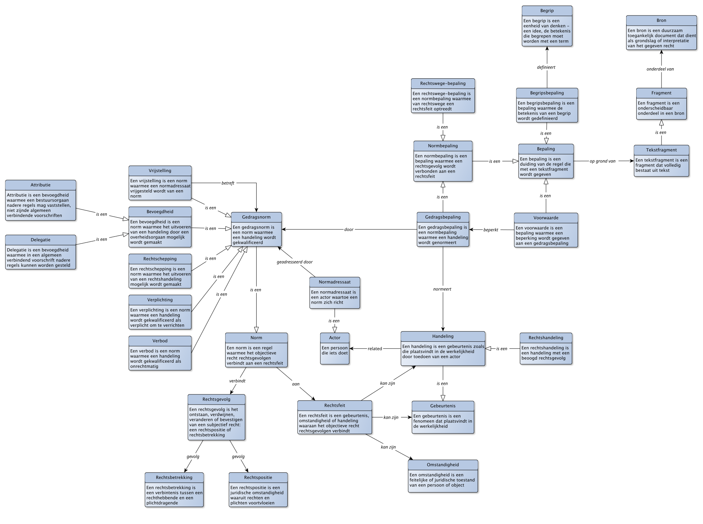
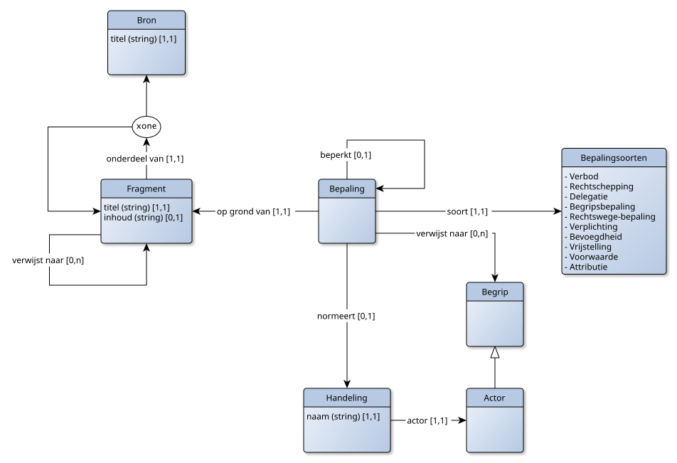

Dit document beschrijft hoe juridische regels gevormd kunnen worden. Daarvoor geeft dit document een aantal begrippen en beschrijft hoe deze begrippen in samenhangt gebruikt kunnen worden om juridische regels te vormen: het juridisch grammatica.
De opbouw van dit document is als volgt:
De kernbegrippen zijn:
Zo ontstaat een heldere lijn vanuit de tekst van het recht naar handelingen zoals die feitelijk plaatsvinden en normering behoeven. Die lijn kan zo ook worden omgedraaid:
En tenslotte ontstaat dan een stukje tekst, waarin de gevormde regels kunnen worden gecodificeerd.
De uitwerking van regelvorming verloopt in lagen:
Als voorbeeld nemen we de casus van een individuele inkomenstoeslag. Deze wordt beschreven in artikel 36 van de participatiewet:
1. Op aanvraag van een persoon van 21 jaar of ouder doch jonger dan de pensioengerechtigde leeftijd, die langdurig een laag inkomen en geen in aanmerking te nemen vermogen als bedoeld in artikel 34 heeft en geen uitzicht heeft op inkomensverbetering, kan het college, gelet op de omstandigheden van die persoon, een individuele inkomenstoeslag verlenen.
2 Tot de omstandigheden, bedoeld in het eerste lid, worden in ieder geval gerekend:
a. de krachten en bekwaamheden van de persoon; en
b. de inspanningen die de persoon heeft verricht om tot inkomensverbetering te komen.
3 Indien aan de persoon, bedoeld in het eerste lid, in de periode van 12 maanden onmiddellijk voorafgaande aan de aanvraag, een individuele inkomenstoeslag is verleend, wordt de aanvraag afgewezen.
4 De artikelen 43, 49 en 52 zijn niet van toepassing.
Dit artikel is tekstfragment en onderdeel van een bron, de participatieswet. Deze bron biedt een grondslag voor de regels rondom een individuele inkomenstoeslag. Dit artikel kan zelf nog worden opgedeeld in vier afzonderlijke tekstfragmenten: elk lid is een afzonderlijk tekstfragment. We zouden ook die tekstfragmenten weer kunnen opsplitsen (zo kan je lid 2 nog in een sub-a en sub-b fragment opsplitsen, maar voorlopig laten we het bij de leden).
We verwijzen naar tekstfragmenten conform de aanwijzingen voor de regelgeving. Zo krijgen we de onderstaande opdeling:
- Participatiewet
- Artikel 36 Pw
- Artikel 36 lid 1 Pw
- Artikel 36 lid 2 Pw
- Artikel 36 lid 3 Pw
- Artikel 36 lid 4 Pw
Artikel 36 lid 1 verwijst bovendien naar Artikel 34. Ook dit artikel is daarmee relevant voor onze analyse. En artikel 36 lid 4 verwijst naar de artikel 43, 49 en 52. Ook die nemen we mee in onze beschouwing. Merk op dat ook deze artikelen weer verwijzingen bevatten, ook die artikelen nemen we mee. We gaan net zolang door, tot we geen nieuwe verwijzingen meer tegenkomen. We kunnen eventueel ook een voorlopig grens bepalen, bijvoorbeeld: stoppen als een verwijzing over de grens van een wet heengaat. Zo zijn er in ons voorbeeld verwijzingen buiten de participatiewet: die hebben we voorlopig niet meegenomen.
Zo krijgen we uiteindelijk een kennisgraaf met daarin de volgende tekstfragmenten en verwijzingen tussen die tekstfragmenten. Daarmee hebben we de initiële kern van onze regelvorming-ui te pakken. Maar zoals we zullen zien, die kern wordt nog groter als we verder zijn in de analyse.

We gaan kijken welke bepalingen er aanwezig zijn in het eerste tekstfragment: Artikel 36 lid 1 Pw, hieronder nogmaals afgebeeld.
1. Op aanvraag van een persoon van 21 jaar of ouder doch jonger dan de pensioengerechtigde leeftijd, die langdurig een laag inkomen en geen in aanmerking te nemen vermogen als bedoeld in artikel 34 heeft en geen uitzicht heeft op inkomensverbetering, kan het college, gelet op de omstandigheden van die persoon, een individuele inkomenstoeslag verlenen.
Dit artikel is een duidelijk geval van een bepaling waarin een bevoegdheid wordt geregeld. Het betreft een bevoegdheid met betrekking tot de handeling «verlenen individuele inkomenstoeslag». De normadressaat, degene tot wie deze gedragsnorm is gericht, betreft «het college». Die krijgt de bevoegdheid.
Er gebeurt echt nog meer in dit tekstfragment. Het fragment bevat ook nog twee voorwaarden. De eerste voorwaarde is materieel en beperkt de bevoegdheid. De bevoegdheid is onder de voorwaarde dat:
De tweede voorwaarde is procedureel: die stelt dat het college een toeslag alleen mag verlenen als het daarbij let op de omstandigheden van die persoon.
In deze bepalingen staan een aantal begrippen benoemd, zonder dat ze gedefinieerd zijn. We zijn dan ook op zoek naar deze begripsbepalingen. Deze begripsbepalingen zullen in andere tekstfragmenten staan. We zijn op zoek naar de volgende begripsbepalingen:
Het begrip «uitzicht op inkomensverbetering» wordt in de wet niet verder uitgewerkt. En ook de uitwerking van «omstandigheden van de persoon» blijven open normen. Artikel 8 geeft de oplossing. Ook dit artikel is voor ons relevant:
1. De gemeenteraad stelt bij verordening regels met betrekking tot:
a. het verlagen van de bijstand, bedoeld in artikel 18, tweede lid en de periode van de verlaging van de bijstand, bedoeld in artikel 18, vijfde en zesde lid;
b. het verlenen van een individuele inkomenstoeslag als bedoeld in artikel 36;
c. het verlagen van de bijstand, bedoeld in artikel 9a, twaalfde lid.
2 De regels, bedoeld in het eerste lid, hebben voor zover het gaat om het eerste lid, onderdeel b, in ieder geval betrekking op de hoogte van de individuele inkomenstoeslag en de wijze waarop invulling wordt gegeven aan de begrippen langdurig en laag inkomen.
Artikel 8 lid 1 sub b bevat een delegatie-bepaling die de gemeenteraad verplicht tot het opstellen van een verordening met daarin regels met betrekking tot een individuele inkomenstoeslag. Met artikel 8 lid 2 omvat die verplichting ook een verplichting om een begrips-bepaling op te nemen met betrekking tot de begrippen langdurig en laag inkomen.
We nemen in dit voorbeeld de gemeente Utrecht als voorbeeld. De bron die we nodig hebben is in dit geval de Verordening individuele inkomenstoeslag gemeente Utrecht. Het tekstfragment Artikel 2 van deze bron geeft ons de definitie:
Een persoon heeft een langdurig laag inkomen als gedurende de referteperiode, over de gehele periode bezien, het in aanmerking te nemen inkomen niet hoger is dan 125% van de van toepassing zijnde bijstandsnorm.
Dit betreft een begripsbepaling, betreffende het begrip "langdurig laag inkomen". Deze bepaling maakt weer gebruik van twee andere begrippen, die we ook weer zoeken:
Tenslotte levert ons artikel 4 van de verordening een verdere invulling van de open norm m.b.t. uitzicht op inkomensverbetering op:
Uitzicht op inkomensverbetering wordt in ieder geval aanwezig geacht bij personen die op de peildatum of in de referteperiode een MBO-, HBO- of WO-opleiding of een particuliere beroepsopleiding volgen, tenzij burgemeester en wethouders van oordeel zijn dat er sprake is van bijzondere individuele omstandigheden die in de weg staan aan inkomensverbetering.
Merk op dat de regelgeving nog vrij veel ruimte laat aan het bestuursorgaan. Er is zelfs nog een hardheidsclausule aanwezig (artikel 5 van de verordening), waarmee het bestuursorgaan vrij veel ruimte heeft voor individuele afwegingen.

[TODO]
[TODO]
Een modelleertaal om juridische regels mee te vormen.
"Regelgeving" is een term waarmee juridische teksten worden aangeduid die voorschriften geven waar "we" ons aan moeten houden. Hieronder vallen onder meer (in Nederland): de wet in formele zin, algemene maatregelen van bestuur en ministeriële regelingen, maar ook lokale verordeningen en Europese verordeningen en richtlijnen. De regels zijn gegeven, ook wel het "positieve recht" genoemd: recht dat is geponeerd (vanuit het Engels: "positive law - law that is posited").
Met "regelvorming" wordt iets vergelijkbaar bedoeld. De nadruk ligt nu echter niet op het feit dat de regels gegeven zijn (positief recht), maar juist ook zijn gevormd. Daarvoor is een model, een mal, nodig: zodat we de regels kunnen vormen conform zo'n model.
Regelvorming lijkt op wetsanalyse. Met regelvorming leggen we de nadruk dat het niet gaat om een analyse, maar juist over het vormen van regels. De vorm staat centraal, niet de analyse. Regelvorming vindt idealiter dan ook plaats voordat de regelgeving ontstaat, als stap op weg naar de uiteindelijke tekst.
Bij de uitleg van de modelleertaal in dit document beginnen we echter bij die tekst, de bronnen waaruit het recht gegeven wordt. We beginnen hiermee met wat sinds de drukpers een gegeven is waar we makkelijk aan voorbij gaan: dat het recht ons gegeven wordt in tekst. Maar als dit model is uitgelegd, dan is het prima mogelijk om met de taal die zo is ontstaan "andersom" te werken: juist bij het einde te beginnen, en een (nieuw) model op te stellen. Dan is er nog geen tekst, maar alleen een model. Met dit model in gedachten, kan de tekst dan worden opgesteld. Zo kunnen de regels daadwerkelijk worden gevormd en niet (alleen) worden gegeven of geanalyseerd.
De basis van regelvorming vloeit voort uit de gegeven regels. We noemen dit een «bron».
Een BRON is een duurzaam toegankelijk document dat dient als grondslag of interpretatie van het gegeven recht
Een bron zal vaak bestaan uit fragmenten. Het zijn die specifieke fragmenten die je met elkaar in verband wilt brengen. Denk aan een opbouw in hoofdstukken, paragrafen, artikelen, leden van artikelen, etc. Dit betreft de oppervlaktestructuur van een bron: het is wat je direct kunt zien.
Voorbeelden van grondslag-bronnen zijn de Algemene Wet Bestuursrecht (een wet in formele zin), de AVG (Europese verordening), Vreemdelingenbesluit (een AmvB) en het uniform subsidiekader (een ministeriële regeling). Belangrijke rechtelijke uitspraken (jurisprudentie) zijn grondslag-bronnen. Voorbeelden van interpretatie-bronnen zijn de memorie van toelichting op de Algemene Wet Bestuursrecht of redactioneel commentaar bij juridische uitspraken.
Een FRAGMENT is een onderscheidbaar onderdeel in een BRON
Voor regelvorming ligt de nadruk op tekstfragmenten: fragmenten die bestaan uit tekst. In beginsel kan een bron ook uit andere fragmenten bestaan, bijvoorbeeld afbeeldingen, geometrie, gestructuurde gegevens, etc. Die benoemen we wel, maar laten we voor ons regelvorming (voorlopig) buiten beschouwing.
Een TEKSTFRAGMENT is een FRAGMENT dat volledig bestaat uit tekst
Een bron kun je hiërarchisch opbouwen. Zo bestaat een bron uit tekstfragmenten, die zelf weer uit tekstfragmenten kunnen bestaan. Daarnaast kunnen tekstfragmenten ook verwijzen naar andere tekstfragmenten. Waar dit in webpagina's wordt gedaan door middel van hyperlinks, kennen juridische teksten vaak specifieke standaarden om tekstueel te kunnen verwijzen. Bijvoorbeeld: "Artikel 1:3 lid 1 Awb".
Een BRONVERWIJZING is een verwijzing naar een FRAGMENT zoals deze in een bron is gegeven
Merk op dat een bronverwijzing daarwerkelijk in de tekst voor moet komen. Een bronverwijzing volgt (dus) niet uit een interpretatie, maar expliciet in de bron te vinden.
Een bepaling is een tekstfragment waarmee een regel wordt geduid. Een bepaling beschrijft hoe het tekstfragment moet worden gelezen. Het is dus niet zomaar een tekstfragment, maar beschrijft de regel die met het tekstfragment wordt uitgedrukt. Als je een tekstfragment maar klein genoeg maakt, dan zal een tekstfragment precies één bepaling betreffen. Maar soms worden de tekstfragmenten weer zo klein dat het moeilijk is om ze te onderscheiden. Dan is het makkelijker om een groter tekstfragment te kiezen, en te stellen dat er sprake is van meerdere bepalingen.
Een BEPALING is een duiding van de regel die met een TEKSTFRAGMENT wordt gegeven
Merk op dat een bepaling niet is gegeven: slechts de tekst is in de bron gegeven. Om tot de bepaling te komen is interpretatie, duiding nodig van de tekst. Dat betekent dat hierover discussie mogelijk is, en dat de vastlegging van bepalingen zelf een interpretatiebron betreft.
Een bepaling kan zowel gerelateerd zijn aan een tekstfragment uit een grondslag-bron als uit een interpretatie-bron. De relatie verschilt echter wel! Een bepaling betreft precies één tekstfragment van een grondslag-bron en volgt uit (heeft rationale in) nul of meerdere tekstfragmenten van interpretatie-bronnen.
Bepalingen kunnen zowel gedragsregels betreffen (regels die ons gedrag normeren) als ondersteunend zijn aan andere bepalingen. In wet- en regelgeving komen de volgende gedragsbepalingen voor:
NOTE
In de literatuur wordt de term "bevoegdheid" soms breder gezien en wordt geen specifiek onderscheid gemaakt tussen bevoegdheden en rechtscheppingen. In rechtsvorming is dit echter bijzonder relevant, aangezien een «bevoegdheid» noodzakelijk is voor overheidsorganen, ook als dit geen rechthandelingen betreft, terwijl burgers en bedrijven in beginsel alle (niet-verboden) handelingen mogen uitvoeren. Zij hebben slechts een «rechtschepping» nodig om te mogen handelen in juridische zin
Merk op: deze onderverdeling is gerelateerd aan de indeling die Hohfeld heeft gemaakt van rechten en plichten. Echter, waar Hohfeld ingaat op de indeling van subjectieve rechten, betreft bovenstaande indeling een ordening van objectieve rechten. Zie ook verderop dit document.
Bevoegdheden zijn voorbehouden aan bestuursorganen. Dat komt omdat de overheid in beginsel niks mag, tenzij het daartoe bevoegd is. Dus al die bevoegdheden moeten worden gevormd. Dit geldt niet voor natuurlijke personen en de overige rechtspersonen: die mogen in beginsel alles, tenzij het verboden is. Wel geldt dat er soms extra rechten nodig zijn om bepaalde rechtshandelingen te mogen uitvoeren. Zo regelt de kieswet wie het recht hebben om te mogen stemmen, daarvoor is dus een rechtscheppende bepaling nodig.
Ook het maken van regels zelf is een handeling. Er zijn twee specifieke gedragsbepalingen te vinden die gaan over het maken van regels:
NOTE
We sluiten hierbij aan op de definitie van een algemeen verbindend voorschrift zoals in Aanwijzing 2.17. We beperken de term "delegatie" hier tot delegeren van bevoegdheid tot stellen van algemeen verbindende voorschriften. Andere regels worden daarbij als attributie gezien, hoewel de term "delegatie" ook breder wordt beschouwd. Wellicht zou je ook kunnen kiezen om beide delegatie te noemen, om vervolgens dan eerstgenoemde te specialiseren naar "AVV-Delegatie".
Delegatie- en attributiebepalingen kunnen ook een verplichting omvatten. Zo betreft de tekst "Bij of krachtens AmvB kunnen" slechts een (optionele) delegatiebepaling, terwijl "Bij of krachtens AmVB worden" een verplichtende delegatiebepaling.
Naast bovenstaande soorten bepalingen zijn er nog enkele andere ondersteunde bepalingen te vinden. Deze bepalingen normeren geen gedrag, maar ondersteunen andere bepalingen die dat wel doen:
Tenslotte zijn er bepalingen die niet zozeer gedrag normeren, maar wel direct ("van rechtwege") gevolgen verbinden aan een bepaalde handeling, gebeurtenis of omstandigheid.
Gedragsbepalingen gaan over handelingen zoals die in de werkelijkheid worden uitgevoerd. Met het vinden van de bepalingen is het ook mogelijk om die handelingen te benoemen.
Een HANDELING is een gebeurtenis zoals die plaatsvindt in de werkelijkheid door toedoen van een actor
Hoewel niet expliciet in de definitie opgenomen, zijn alleen handelingen die het objectieve recht normeert van belang. Handelingen zonder enig rechtsgevolg vallen buiten de scope van rechtsvorming. Van een handeling willen we weten wie de handeling uitvoert en waarover de handeling gaat:
Een ACTOR is een persoon die een handeling uitvoert. Bij rechtshandeling zal de actor altijd een natuurlijk persoon of een rechtspersoon zijn.
Een OBJECT is hetgeen waarover de handeling gaat. Objecten zijn vaak "dingen", maar kunnen ook personen of gebeurtenissen zijn (bijvoorbeeld bij een onderzoekshandeling).
Meerdere bepalingen kunnen eenzelfde handeling normeren. Daarmee kun je bepalingen groeperen rondom één handeling, en krijg je een goed beeld welke normeringen er allemaal gelden rondom die handeling. We kunnen hiermee alle bepalingen groeperen rondom een handeling:
De enige soort bepaling die we hiermee nog niet (helemaal) hebben afgedekt is de rechtswege-bepaling. Die kan namelijk ook betrekking hebben op een omstandigheid of gebeurtenis die geen handeling is. Die kunnen we eenvoudig opnemen door ook een dergelijke omstandigheid of gebeurtenis op te nemen. Zo kun je ook een groepering van bepalingen krijgen rondom zo'n gebeurtenis of omstandigheid.
Regelvorming gaat over het vormen van het objectieve recht, het recht dat in beginsel voor iedereen geldt. Natuurlijk zijn specifieke bepalingen gericht op specifieke personen (de "normadressaat": degene aan wie de norm is geadresseerd), maar zo'n regel is niet specifiek bedoeld voor een specifieke persoon. Subjectieve rechten zijn dat juist wel: die "horen bij" een specifieke persoon. Het volgende tekstfragment betreft een definitiebepaling voor het begrip «eigensdom»: "Eigendom is het meest omvattende recht dat een persoon op een zaak kan hebben" (Artikel 1 lid 1 BW boek 5). Dit objectieve recht geldt voor iedereen. Maar stel dat je een huis bezit. Dan is dat jouw eigendom, en niet van iemand anders. Het eigendom van een specifiek huis, is een subjectief recht.
Een rechtsgevolg is het gevolg dat het objectieve recht verbindt aan gebeurtenis, omstandigheid of handeling. Het rechtsgevolg omvat het ontstaan, wijzigen, verdwijnen en bevestigen van de subjectieve rechten: rechtsposities of rechtsbetrekkingen die optreden als gevolg van dat rechtsfeit of die rechtshandeling.
Daarmee komen we de kern van rechtsvorming: de feit-gevolg-paren. Een feit-gevolg-paar is een rechtsfeit, verbonden aan het rechtsgevolg, op grond van een bepaling.
Een RECHTSFEIT is een omstandigheid, gebeurtenis of handeling waaraan het objectieve recht een RECHTSGEVOLG verbindt.
Een rechtsfeit is niet zomaar een omstandigheid, gebeurtenis of handeling. Er moet sprake zijn van een rechtsgevolg. Dus dat de zon ondergaat, zal geen rechtsfeit zijn. Maar op het moment dat de dag om is, kan het wel zijn dat iemand de leeftijd van 18 jaar heeft bereikt, en daarmee meerderjarig is geworden. Daarmee kan tijdsverloop WEL weer een rechtsfeit zijn. Als een bepaalde omstandigheid, gebeurtenis of handeling te kwalificeren is ("geldt als") rechtsfeit, dan kan pas sprake zijn van het rechtsgevolg.
Een RECHTSGEVOLG is een aanduiding voor het gevolg dat het objectieve recht verbindt aan een omstandigheid, gebeurtenis of handeling.
Dit gevolg bestaat uit het ontstaan, wijzigen, verdwijnen of bevestigen van subjectieve rechten: rechtsposities (zoals "meerderjarig") of rechtsbetrekkingen.
Een RECHTSPOSITIE is een juridische omstandigheid van iets of iemand, waaraan het objectieve recht gevolgen verbindt.
Een RECHTSBETREKKING is een relatie waarbij een RECHTHEBBENDE een recht heeft ten opzichte van een PLICHTDRAGENDE.
In de literatuur worden de termen "rechtspositie" en "rechtsbetrekking" nog wel eens door elkaar gebrukt. Een opvatting is dat een rechtspositie betrekking heeft op één partij, waarbij de rechtsbetrekking die tussen partijen is (met elk een eigen rechtspositie). Een andere opvatting is dat de rechtspositie juist een bundeling is van een aantal rechtsbetrekkingen. Als Jan de eigenaar is van een perceel, dan is Jan in de rechtspositie van "eigenaar". Dit houdt een heel stel afzonderlijke rechtsbetrekkingen in. Deze twee opvattingen kunnen beiden waar zijn, door een rechtspositie niet te zien als een rechtsbetrekking, maar juist als een rechtsfeit waar op zichzelf het objectieve recht weer gevolgen aan verbindt (en vaak dan van rechtswege). Dus dat Jan de eigenaar is van een perceel, is daarmee een rechtsfeit: het is de rechtspositie van Jan. En van rechtswege houdt dit een aantal rechtsbetrekkingen in.
Een andere opvatting is dat een ding geen rechtspositie kan hebben, juist omdat het recht handelen van personen normeert, en dingen niet kunnen handelen. Ook die opvatting past in bovenstaande definities. Het normeren van handelen betreft hierbij de rechtsbetrekkingen, niet de rechtsposities. Je kunt namelijk een ding een rechtspositie geven (bijvoorbeeld: "verboden terrein"). Ook in dit geval heeft die rechtspositie een aantal rechtsbetrekkingen tot gevolg. Door te besluiten dat een terrein verboden is, ontstaat een rechtspositie en daarmee van rechtswege enkele rechtsbetrekkingen (zoals een verbod tot betreden). Vanzelfsprekend geldt dit verbod dan weer niet voor enkelen die bevoegd zijn om het terrein te betreden: ook die rechtsbetrekking behoort tot die rechtspositie.
Met de feit-gevolg paren hebben we niet alleen beschreven welke normen aan een handeling worden gesteld, maar ook wat de gevolgen zijn. Die gevolgen zijn op zichzelf omstandigheden. Dit kunnen rechtsposities zijn of rechtsbetrekkingen. Rechtsposities zullen over het algemeen met een begripsbepaling zijn omschreven. Rechtsbetrekkingen zijn vaak als gedragsbepalingen omschreven: een verplichting om, een verbod om, een rechts om of een vrijstelling tot.
Een rechtspositie is vaak van belang bij een voorwaarde. Zo betreft het volgende tekstfragment een rechtsbepaling (het recht om te mogen stemmen): "De leden van de Tweede Kamer der Staten-Generaal worden gekozen door degenen die op de dag van de kandidaatstelling Nederlander zijn en op de dag van de stemming de leeftijd van achttien jaar hebben bereikt" (Artikel B1 lid 1 Kieswet). In dit tekstfragment zitten ook twee voorwaarde-bepalingen: je moet Nederlander zijn en je moet de leeftijd van achttien jaar hebben bereikt. Nederlander zijn is hier de omstandigheid, de rechtspositie die je moet hebben.
Als een rechtspositie als voorwaarde wordt gebruikt, is er geen sprake van een afzonderlijke rechtsbetrekking. Toch zal de rechtspositie zelf ook één of meerdere rechtsbetrekkingen tot gevolg hebben. Dit kan slechts op grond van een rechtswege-bepaling. In alle andere gevallen zou er immers eerst een rechtshandeling moeten zijn verricht. Zoals hierboven er geen direct rechtsgevolg is aan het feit dat iemand Nederlander is en meerderjarig: dat is slechts een voorwaarde om de rechtshandeling van stemmen uit te mogen voeren. Het volgende tekstfragment betreft de rechtsgevolg-bepaling dat iemand het recht heeft tot verblijf (een rechtsbetrekking): "De vreemdeling heeft in Nederland uitsluitend rechtmatig verblijf: als gemeenschapsonderdaan zolang deze onderdaan verblijf houdt op grond van een regeling krachtens het Verdrag betreffende de werking van de Europese Unie dan wel de Overeenkomst betreffende de Europese Economische Ruimte;" (Artikel 8 aanhef en onder e, Vw2000). "Gemeenschapsonderdaan" is hier de rechtspositie, en deze rechtswege-bepaling is onder de genoemde voorwaarden.
Rechtsgevolgen betreffen subjectieve rechten: ze binden concrete partijen in hun handelen. Bepalingen in het objectieve recht zijn dit juist niet: ze binden geen concrete partijen, maar beschrijven juist in algemene zin wanneer sprake is van een subjectief recht: door rechtsfeiten te verbinden aan die gevolgen.
Daarmee is er wel een relatie: afhankelijk van de bepaling zal er sprake zijn van een specifiek soort subjectief recht dat ontstaat. Voor de ordening van subjectieve rechten maken we gebruik van de indeling die Hohfeld hiervoor heeft gegeven, in het bijzonder de indeling van rechtsbetrekkingen. Hohfeld onderscheid vier soorten rechtsbetrekkingen, elk opgebouwd uit paren van twee begrippen:
| Recht | Houdt in | leidt tot | plicht |
|---|---|---|---|
| Claim (aanspraak) | Het recht om iets te mogen eisen | Een plicht om de eis te vervullen | Duty (verplichting) |
| Liberty (vrijheid) | Het recht om iets te mogen | Een plicht om hieraan geen eisen te stellen | No-right (geen aanspraak) |
| Power (bevoegdheid) | Het recht om een rechtshandeling te verrichten | Een plicht om zich hieraan te onderwerpen | Liability (gehoudenheid) |
| Immunity (immuniteit) | Het recht om vrijgesteld te zijn van een onderwerping | Een plicht om te onthouden van rechtshandelen | Disability (geen bevoegdheid) |
Claim-Duty en Liberty-No-right hebben te maken met feitelijk handelen. Handelingen die mogen of moeten zijn daarbij rechtmatige daden, handelingen die juist niet mogen of niet gedaan worden zijn onrechtmatige daden.
Power-Liability en Immunity-Disability hebben te maken met rechtshandelingen. Een power betreft expliciet zo'n rechtshandeling en de liability de onderwerping aan die rechtshandelingen (je accepteert de rechtsgevolgen).
Met bepalingen wordt geregeld welke subjectieve rechten er mogelijk zijn. Vaak benoemd een bepaling daarbij één kant van de rechtsbetrekking, de andere kant ontstaat als gevolg van het verbinding die het objectieve recht legt tussen het rechtsfeit en het rechtsgevolg:
| Bepaling | Schept | Heeft tot gevolg |
|---|---|---|
| Bevoegdheid | Power (van een bestuursorgaan) | Liability (om je te houden aan de gevolgen van de rechtshandeling) |
| Rechtschepping | Power (van een rechtssubjecten, niet zijnde overheid) | Liability (om je te houden aan de gevolgen van de rechtshandeling) |
| Verplichting | Duty (plicht om te handelen) | Claim (je mag aanspraak maken op het feit dat er moet worden gehandeld) |
| Vrijstelling | Liberty (plicht om te handelen geldt niet) | No-right (je mag geen aanspraak maken op het feit dat er moet worden gehandeld) |
| Verbod | Duty (plicht tot nalaten van een handeling) | Claim (je mag aanspraak maken op het feit dat er niet wordt gehandeld) |
Bevoegdheid en rechtschepping is hier uit elkaar getrokken, ondanks dat het gaat omdezelfde soort rechtsbetrekkingen. Dit is gedaan omdat niet-overheidspartijen in beginsel vrij zijn, en dus geen bevoegdheid nodig hebben. Overheidsorganen hebben juist een bevoegdheid nodig. Overigens, niet alleen om rechtshandelingen te plegen, maar ook feitelijke handelingen. Een bevoegdheidsbepaling hoeft dus niet om een rechtshandeling te gaan, maar kan ook (simpelweg) een feitelijke handeling betrekken, bijvoorbeeld het in bewaring nemen van goederen.
Een immunity in een afzonderlijke bepaling is vrij zeldzaam. Meestal is dit geregeld met een voorwaarde-bepaling bij een bevoegdheidsbepaling: de bevoegheid is dan zelf al ingeperkt in het objectieve recht, er is geen specifiek subjectief recht voor nodig.
Ook een liberty als afzonderlijke bepaling is vrij zeldzaam. Meestal zijn liberties "verstopt" in van-rechtswege-bepalingen. Zo is het gevolg van de juridische positie van een eigendom dat de eigenaar vrij is om te doen op zijn erf wat hij wil, en anderen moeten dit hem laten.

Een persoon die iets doet
Toelichting: Indien sprake is van een rechtshandeling, dan betreft dit een natuurlijk persoon of rechtspersoon
Attributie is een bevoegdheid waarmee een bestuursorgaan nadere regels mag vaststellen, niet zijnde algemeen verbindende voorschriften
Specialisatie van: Bevoegdheid
Een begrip is een eenheid van denken - een idee, de betekenis die begrepen moet worden met een term
Een begripsbepaling is een bepaling waarmee de betekenis van een begrip wordt gedefinieerd
Specialisatie van: Bepaling
Gerelateerd: Begrip
Een bepaling is een duiding van de regel die met een tekstfragment wordt gegeven
Gerelateerd: Tekstfragment
Een bevoegdheid is een norm waarmee het uitvoeren van een handeling door een overheidsorgaan mogelijk wordt gemaakt
Specialisatie van: Gedragsnorm
Een bron is een duurzaam toegankelijk document dat dient als grondslag of interpretatie van het gegeven recht
Delegatie is een bevoegdheid waarmee in een algemeen verbindend voorschrift nadere regels kunnen worden gesteld
Specialisatie van: Bevoegdheid
Een fragment is een onderscheidbaar onderdeel in een bron
Gerelateerd: Bron
Een gebeurtenis is een fenomeen dat plaatsvindt in de werkelijkheid
Een gedragsbepaling is een normbepaling waarmee een handeling wordt genormeert
Specialisatie van: Normbepaling
Gerelateerd: Gedragsnorm, Handeling
Een gedragsnorm is een norm waarmee een handeling wordt gekwalificeerd
Specialisatie van: Norm
Een handeling is een gebeurtenis zoals die plaatsvindt in de werkelijkheid door toedoen van een actor
Specialisatie van: Gebeurtenis
Gerelateerd: Actor
Een norm is een regel waarmee het objectieve recht rechtsgevolgen verbindt aan een rechtsfeit
Gerelateerd: Rechtsgevolg, Rechtsfeit
Een normadressaat is een actor waartoe een norm zich richt
Specialisatie van: Actor
Gerelateerd: Gedragsnorm
Een normbepaling is een bepaling waarmee een rechtsgevolg wordt verbonden aan een rechtsfeit
Specialisatie van: Bepaling
Een omstandigheid is een feitelijke of juridische toestand van een persoon of object
Een rechtsbetrekking is een verbintenis tussen een rechthebbende en een plichtdragende
Een rechtschepping is een norm waarmee het uitvoeren van een rechtshandeling mogelijk wordt gemaakt
Specialisatie van: Gedragsnorm
Een rechtsfeit is een gebeurtenis, omstandigheid of handeling waaraan het objectieve recht rechtsgevolgen verbindt
Generalisatie van: Handeling, Omstandigheid, Gebeurtenis
Een rechtsgevolg is het ontstaan, verdwijnen, veranderen of bevestigen van een subjectief recht: een rechtspositie of rechtsbetrekking
Gerelateerd: Rechtsbetrekking, Rechtspositie
Een rechtshandeling is een handeling met een beoogd rechtsgevolg
Specialisatie van: Handeling
Een rechtspositie is een juridische omstandigheid waaruit rechten en plichten voortvloeien
Een rechtswege-bepaling is een normbepaling waarmee van rechtswege een rechtsfeit optreedt
Specialisatie van: Normbepaling
Een tekstfragment is een fragment dat volledig bestaat uit tekst
Specialisatie van: Fragment
Een verbod is een norm waarmee een handeling wordt gekwalificeerd als onrechtmatig
Specialisatie van: Gedragsnorm
Een verplichting is een norm waarmee een handeling wordt gekwalificeerd als verplicht om te verrichten
Specialisatie van: Gedragsnorm
Een voorwaarde is een bepaling waarmee een beperking wordt gegeven aan een gedragsbepaling
Specialisatie van: Bepaling
Gerelateerd: Gedragsbepaling
Een vrijstelling is een norm waarmee een normadressaat vrijgesteld wordt van een norm
Specialisatie van: Gedragsnorm
Gerelateerd: Gedragsnorm

| URI | http://bp4mc2.org/regelvorming#Actor |
|---|---|
| Definitie | Een persoon die iets doet |
| Eigenschap | Kardinaliteit | Datatype/klasse |
|---|
| URI | http://www.w3.org/2004/02/skos/core#Concept |
|---|---|
| Definitie | Een begrip is een eenheid van denken - een idee, de betekenis die begrepen moet worden met een term |
| Eigenschap | Kardinaliteit | Datatype/klasse |
|---|
| URI | http://bp4mc2.org/regelvorming#Bepaling |
|---|---|
| Definitie | Een bepaling is een duiding van de regel die met een tekstfragment wordt gegeven |
| Eigenschap | Kardinaliteit | Datatype/klasse |
|---|---|---|
| op grond van | 1..1 | Fragment |
| verwijst naar | 0..n | Begrip |
| normeert | 0..1 | Handeling |
| beschrijft | 0..n | Begrip |
| soort | 1..1 | Bepalingsoorten |
| beperkt | 0..1 | Bepaling |
| URI | http://data.europa.eu/eli/ontology#LegalResource |
|---|---|
| Definitie | Een bron is een duurzaam toegankelijk document dat dient als grondslag of interpretatie van het gegeven recht |
| Eigenschap | Kardinaliteit | Datatype/klasse |
|---|---|---|
| titel | 1..1 | string |
| URI | http://data.europa.eu/eli/ontology#LegalResourceSubdivision |
|---|---|
| Definitie | Een fragment is een onderscheidbaar onderdeel in een bron |
| Eigenschap | Kardinaliteit | Datatype/klasse |
|---|---|---|
| titel | 1..1 | string |
| verwijst naar | 0..n | Fragment |
| inhoud | 0..1 | string |
| onderdeel van | 1..1 |
| URI | http://bp4mc2.org/regelvorming#Handeling |
|---|---|
| Definitie | Een handeling is een gebeurtenis zoals die plaatsvindt in de werkelijkheid door toedoen van een actor |
| Eigenschap | Kardinaliteit | Datatype/klasse |
|---|---|---|
| naam | 1..1 | string |
| actor | 1..1 | Actor |